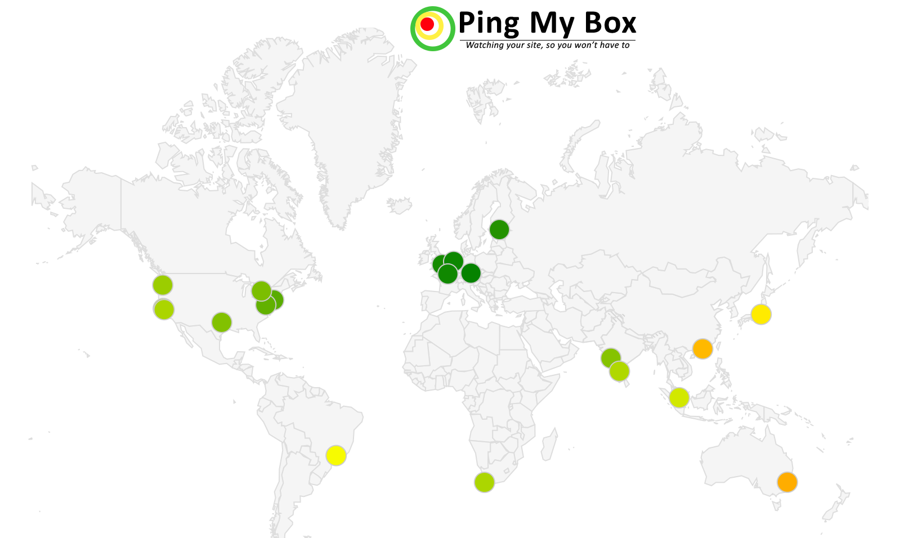
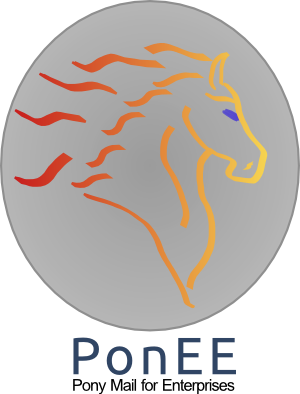
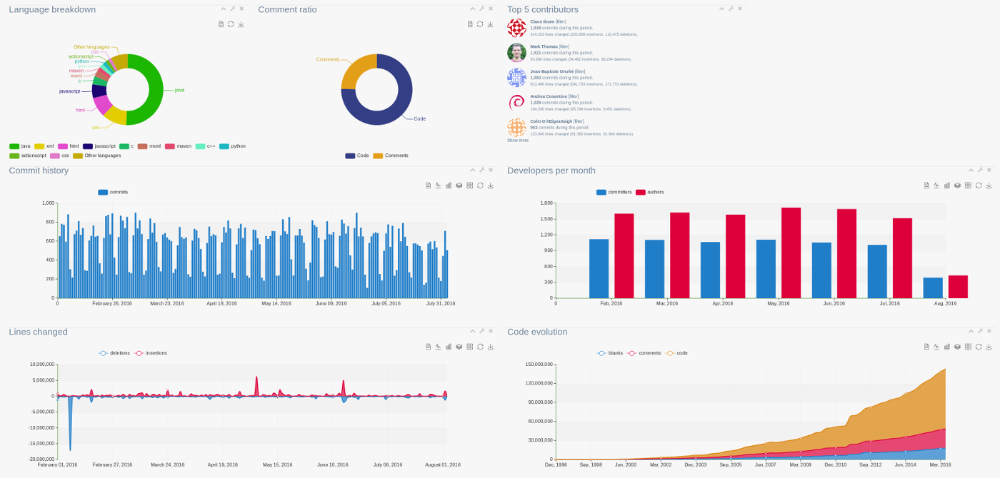
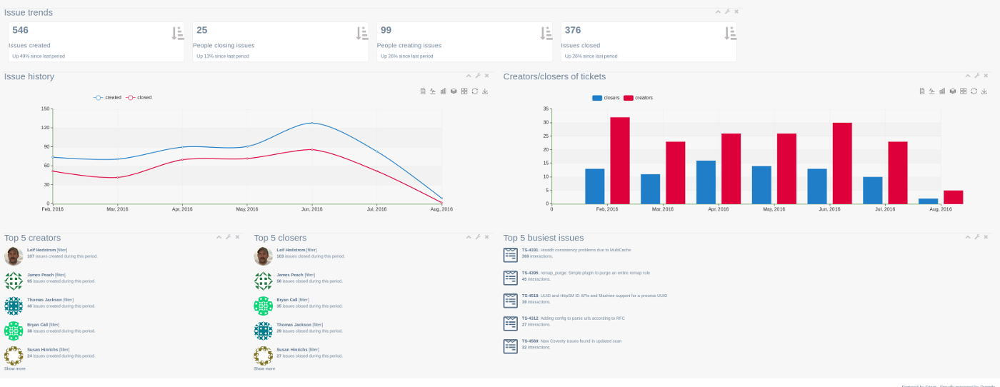
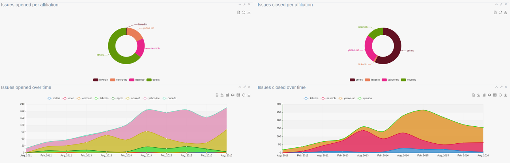

Ping My Box (PMB) monitors public services from across the globe and report on their wellbeing and response times.
Unlike many other similar services, PMB offers global response time charts from across the world, so you can see how
your service fares from different locations. PMB also offers a JSON API interface for integrating your own applications with its data.
Did we mention it's completely free?!! Well, it is (with optional paid account upgrades).
Project web site: https://www.pingmybox.com/

PonEE is an effort to offer hosting and management of Apache Pony Mail (Incubating) for companies and non-profits.
Web site: https://www.ponee.io/



Snoot is a project activity aggregator, primarily designed for FLOSS communities. It allows communities to get a quick overview of the overall activity of one or more projects, or delve into specific details about commits, tickets, emails etc. Furthermore, Snoot allows for advanced comparisons between groups of people, be that companies or just a team. Snoot is currently in beta-testing, you may acquire access to it for your team by contacting us.